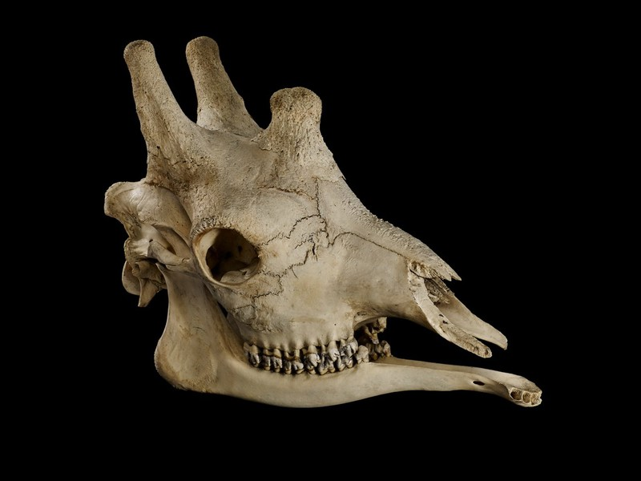
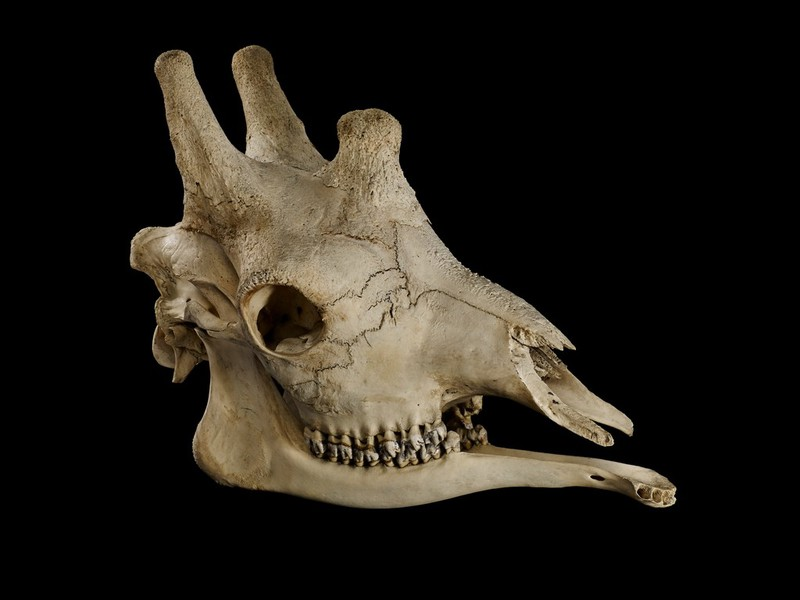

The digiterrus was a group of small mammals that has been extinct for an estimated 45 million years. They could be found all over the world except for extreme polar and desert regions. They ranged in size from an estimated 1.1 inches in width and 2 grams in weight to 5 feet in width and 1.4kg in weight.
The first digiterrus skeleton was discovered in 1839 by Isaac van Holten in Indonesia. Since then tens of thousands of digiterrus skeletons have been discovered worldwide and there is estimated to be close to a thousand different species of digiterrus. The largest species of digiterrus was discovered in the Philippines in 1874. This species of digiterrus was usually about 15 inches tall with a wingspan of up to 5'9" and weighed an estimated 1 and a half kilograms. In comparison, the smallest species of digiterrus is believed to have inhabited limestone caves along the border of Thailand and Myanmar. This little creature was just over an inch long and weighed around 2 grams.
Originally the elongated digits that gave the digiterrus its name are believed to be used for climbing however some believe that they were instead used for gliding similar to a modern day flying squirrel. Their sharp teeth indicate that they were most likely carnivores. Due to their small stature most digiterrus would have hunted insects however the larger species may have hunted small lizards and rodents. To catch their prey it is most likely that digiterrus would have hunted at night similar to other insectivores which indicates that they had good eyesight and a strong sense of smell to detect their prey. The digiterrus was not a very agile creature as it was designed more for climbing than chasing prey, therefore they probably waited to ambush their prey. During daylight hours it is suspected that they would climb high up into the trees and use their feet to hang from branches while they slept.


The monoclopoid was a large one eyed mammal that lived in parts of Africa and Asia around 30 million years ago.
The skeleton of the monoclopoid was first found in 1803 by Arthur Callahan in what is now known as Gambia. There are three distinct species of monoclopoids that have been discovered to date. The African savanna monoclopoid, the African forest monoclopoid and the Asian monoclopoid. They could be up to 14 feet tall, 24 feet long and could weigh an estimated 7 tons when fully grown.
Possibly the most distinct features of the monoclopoid are its single eye in the middle of its head along with their large tusks. The African savanna monoclopoid was the largest while the asian monoclopoid was the smallest. Apart from the size the different species monoclopoids had very little differences.
It is believed that monoclopoids were herbivores as their teeth weren't very sharp. The legs of the monoclopoid suggest a muscular build to support their heavy weight. This muscular build combined with their sharp tusks mean that they were more than capable of defending themselves from predators. Their tusks may have also been used to duel each other in the case of any disagreements.
 

The skeleton of the Ensingo Empanvu was originally discovered in 1851 by Arthur Finchley. It is believed that they roamed all of Africa 5 million years ago.
Ensingo Empanvu are known for their unusually long snakelike necks that allowed them to reach to the very top of trees. Most Ensingo Empanvu were around 16 feet in height however, the tallest recorded of this species to date was over 19 feet tall.
The Ensingo Empanvu was a herbivore that used its long neck to reach the leaves of the tall trees that are found in the savanna where they roamed. Their awkward frame most likely meant that they were unable to escape from predators and so they travelled in herds and used their unusually strong hooves to defend themselves from any threat.